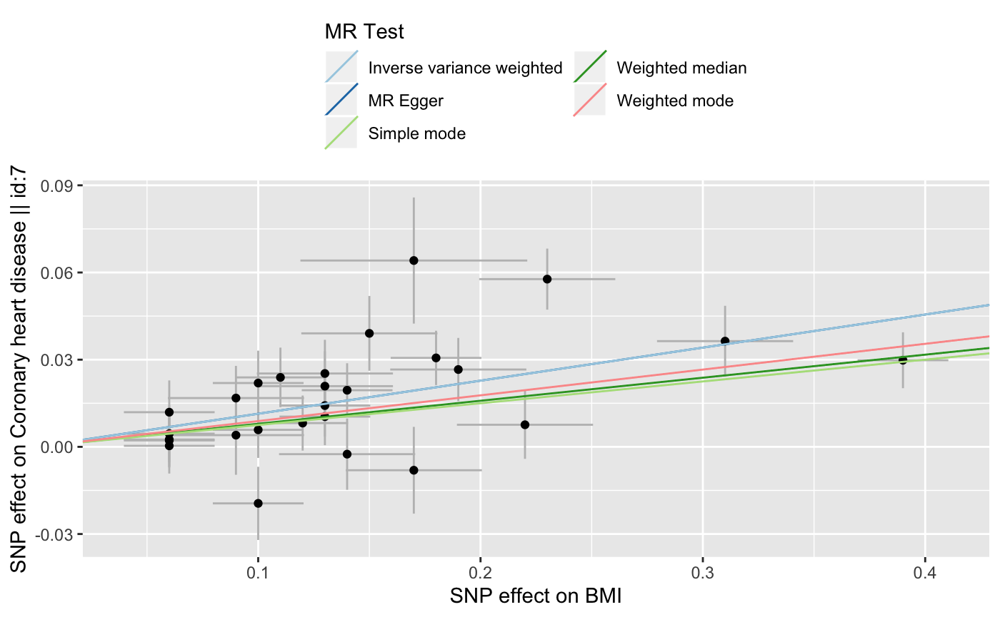
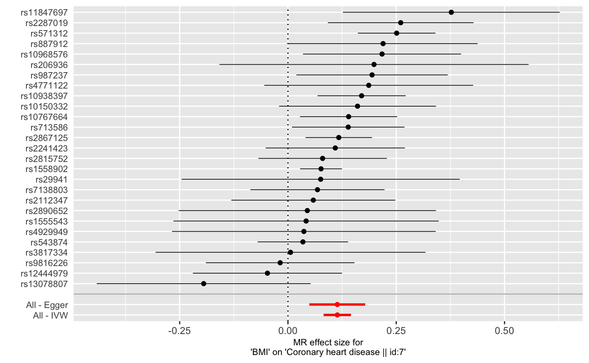
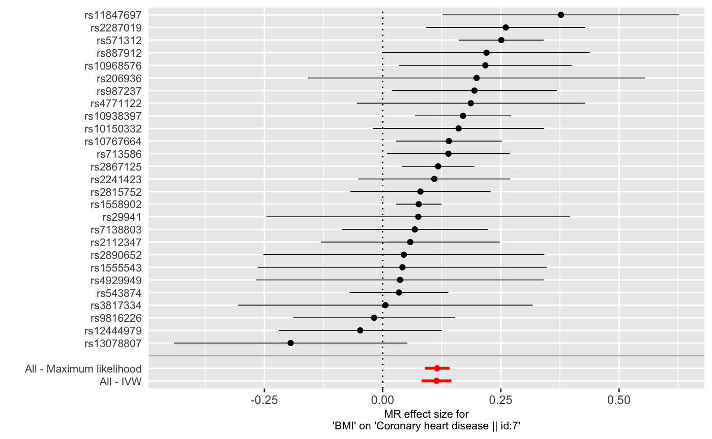
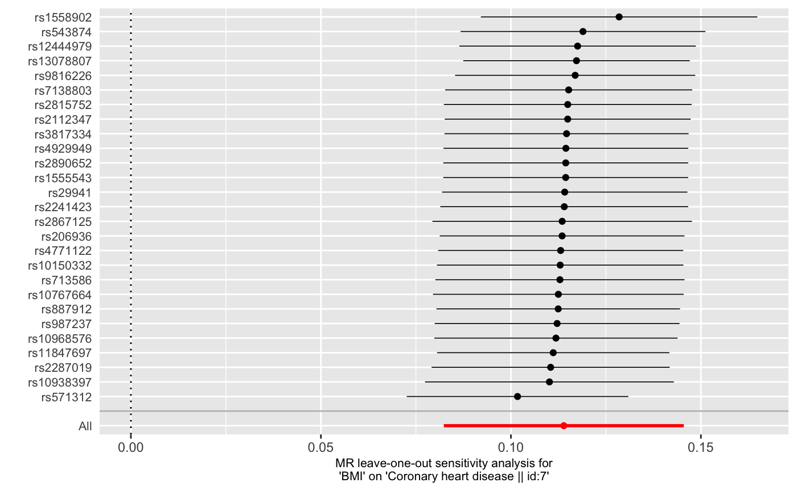
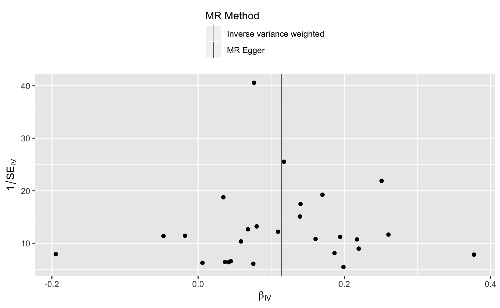

Guide to TwoSampleMR
guide.RmdIntroduction
Two sample Mendelian randomisation (2SMR) is a method to estimate the causal effect of an exposure on an outcome using only summary statistics from genome wide association studies (GWAS). Though conceptually straightforward, there are a number of steps that are required to perform the analysis properly, and they can be cumbersome. The TwoSampleMR package aims to make this easy by combining three important components
- data management and harmonisation
- the statistical routines to estimate the causal effects
- connection to a large repository of the actual GWAS summary statistics needed to perform the analyses.
The general principles (G. Davey Smith and Ebrahim 2003; George Davey Smith and Hemani 2014), and statistical methods (Pierce and Burgess 2013; Bowden, Davey Smith, and Burgess 2015) can be found elsewhere, here we will just outline how to use the R package.
This package uses the ieugwasr package to connect to the database of thousands of complete GWAS summary data.
Installation
To install directly from the GitHub repository do the following:
library(devtools)
install_github("MRCIEU/TwoSampleMR")If you don’t have the devtools package install it from CRAN using install.packages("devtools").
Overview
The workflow for performing MR is as follows:
- Select instruments for the exposure (perform LD clumping if necessary)
- Extract the instruments from the MR Base GWAS database for the outcomes of interest
- Harmonise the effect sizes for the instruments on the exposures and the outcomes to be each for the same reference allele
- Perform MR analysis, sensitivity analyses, create plots, compile reports
A diagramatic overview is shown here:

A basic analysis, e.g. the causal effect of body mass index on coronary heart disease, looks like this:
library(TwoSampleMR)
# List available GWASs
ao <- available_outcomes()
# Get instruments
# Get effects of instruments on outcome
# Harmonise the exposure and outcome data
dat <- harmonise_data(exposure_dat, outcome_dat)
# Perform MR
res <- mr(dat)Each step is documented in detail below.
Authentication
**The authentication method has changed due to the GoogleAuthR method changing. The main differences are that:
- By default you will not be asked to authenticate and will only have access to public data
- If you do need to authenticate in order to access private datasets there is no longer a single file called
mrbase.oauth, rather, there is a directory calledieugwasr_oauth.
Detailed information is given here: https://github.com/MRCIEU/ieugwasr/blob/master/README.md#authentication
Exposure data
A data frame of the instruments for an exposure is required. Each line has the information for one SNP for one exposure. The minimum information required for MR analysis is the following:
-
SNP- rs ID -
beta- The effect size. If the trait is binary then log(OR) should be used -
se- The standard error of the effect size -
effect_allele- The allele of the SNP which has the effect marked inbeta
Other information that is useful for MR can also be provided:
-
other_allele- The non-effect allele -
eaf- The effect allele frequency -
Phenotype- The name of the phenotype for which the SNP has an effect
You can also provide the following extra information:
-
samplesize- Sample size for estimating the effect size -
ncase- Number of cases -
ncontrol- Number of controls -
pval- The P-value for the SNP’s association with the exposure -
units- The units in which the effects are presented -
gene- The gene or other annotation for the the SNP
Reading in from a file
The data can be read in from a text file using the read_exposure_data function. The file must have a header with column names corresponding to the columns described above.
Example 1: The default column names are used
An example of a text file with the default column names is provided as part of the package, the first few rows look like this:
Phenotype SNP beta se effect_allele other_allele eaf pval units gene samplesize
BMI rs10767664 0.19 0.0306122448979592 A T 0.78 5e-26 kg/m2 BDNF 225238
BMI rs13078807 0.1 0.0204081632653061 G A 0.2 4e-11 kg/m2 CADM2 221431
BMI rs1514175 0.07 0.0204081632653061 A G 0.43 8e-14 kg/m2 TNNI3K 207641
BMI rs1558902 0.39 0.0204081632653061 A T 0.42 5e-120 kg/m2 FTO 222476
BMI rs10968576 0.11 0.0204081632653061 G A 0.31 3e-13 kg/m2 LRRN6C 247166
BMI rs2241423 0.13 0.0204081632653061 G A 0.78 1e-18 kg/m2 LBXCOR1 227886The exact path to the file will be different on everyone’s computer, but it can be located like this:
You can read the data in like this:
bmi_exp_dat <- read_exposure_data(bmi_file)
head(bmi_exp_dat)
#> SNP beta.exposure se.exposure effect_allele.exposure
#> 1 rs10767664 0.19 0.03061224 A
#> 2 rs13078807 0.10 0.02040816 G
#> 3 rs1514175 0.07 0.02040816 A
#> 4 rs1558902 0.39 0.02040816 A
#> 5 rs10968576 0.11 0.02040816 G
#> 6 rs2241423 0.13 0.02040816 G
#> other_allele.exposure eaf.exposure pval.exposure units.exposure
#> 1 T 0.78 5e-26 kg/m2
#> 2 A 0.20 4e-11 kg/m2
#> 3 G 0.43 8e-14 kg/m2
#> 4 T 0.42 5e-120 kg/m2
#> 5 A 0.31 3e-13 kg/m2
#> 6 A 0.78 1e-18 kg/m2
#> gene.exposure samplesize.exposure exposure mr_keep.exposure
#> 1 BDNF 225238 BMI TRUE
#> 2 CADM2 221431 BMI TRUE
#> 3 TNNI3K 207641 BMI TRUE
#> 4 FTO 222476 BMI TRUE
#> 5 LRRN6C 247166 BMI TRUE
#> 6 LBXCOR1 227886 BMI TRUE
#> pval_origin.exposure units.exposure_dat id.exposure data_source.exposure
#> 1 reported kg/m2 vs2usl textfile
#> 2 reported kg/m2 vs2usl textfile
#> 3 reported kg/m2 vs2usl textfile
#> 4 reported kg/m2 vs2usl textfile
#> 5 reported kg/m2 vs2usl textfile
#> 6 reported kg/m2 vs2usl textfileThe output from this function is a new data frame with standardised column names:
SNPexposurebeta.exposurese.exposureeffect_allele.exposureother_allele.exposureeaf.exposuremr_keep.exposurepval.exposurepval_origin.exposureid.exposuredata_source.exposureunits.exposuregene.exposuresamplesize.exposure
The function attempts to match the columns to the ones it expects. It also checks that the data type is as expected.
If the required data for MR to be performed is not present (SNP name, effect size, standard error, effect allele) for a particular SNP, then the column mr_keep.exposure will be “FALSE”.
Example 2: The text file has non-default column names
If the text file does not have default column names, this can still be read in as follows. Here are the first few rows of an example:
rsid,effect,SE,a1,a2,a1_freq,p-value,Units,Gene,n
rs10767664,0.19,0.030612245,A,T,0.78,5.00E-26,kg/m2,BDNF,225238
rs13078807,0.1,0.020408163,G,A,0.2,4.00E-11,kg/m2,CADM2,221431
rs1514175,0.07,0.020408163,A,G,0.43,8.00E-14,kg/m2,TNNI3K,207641
rs1558902,0.39,0.020408163,A,T,0.42,5.00E-120,kg/m2,FTO,222476Note that this is a CSV file, with commas separating fields. The file is located here:
To read in this data:
bmi_exp_dat <- read_exposure_data(
filename = bmi2_file,
sep = ",",
snp_col = "rsid",
beta_col = "effect",
se_col = "SE",
effect_allele_col = "a1",
other_allele_col = "a2",
eaf_col = "a1_freq",
pval_col = "p-value",
units_col = "Units",
gene_col = "Gene",
samplesize_col = "n"
)
#> No phenotype name specified, defaulting to 'exposure'.
head(bmi_exp_dat)
#> SNP beta.exposure se.exposure effect_allele.exposure
#> 1 rs10767664 0.19 0.03061224 A
#> 2 rs13078807 0.10 0.02040816 G
#> 3 rs1514175 0.07 0.02040816 A
#> 4 rs1558902 0.39 0.02040816 A
#> 5 rs10968576 0.11 0.02040816 G
#> 6 rs2241423 0.13 0.02040816 G
#> other_allele.exposure eaf.exposure pval.exposure units.exposure
#> 1 T 0.78 5e-26 kg/m2
#> 2 A 0.20 4e-11 kg/m2
#> 3 G 0.43 8e-14 kg/m2
#> 4 T 0.42 5e-120 kg/m2
#> 5 A 0.31 3e-13 kg/m2
#> 6 A 0.78 1e-18 kg/m2
#> gene.exposure samplesize.exposure exposure mr_keep.exposure
#> 1 BDNF 225238 exposure TRUE
#> 2 CADM2 221431 exposure TRUE
#> 3 TNNI3K 207641 exposure TRUE
#> 4 FTO 222476 exposure TRUE
#> 5 LRRN6C 247166 exposure TRUE
#> 6 LBXCOR1 227886 exposure TRUE
#> pval_origin.exposure units.exposure_dat id.exposure data_source.exposure
#> 1 reported kg/m2 TrGPJg textfile
#> 2 reported kg/m2 TrGPJg textfile
#> 3 reported kg/m2 TrGPJg textfile
#> 4 reported kg/m2 TrGPJg textfile
#> 5 reported kg/m2 TrGPJg textfile
#> 6 reported kg/m2 TrGPJg textfileIf the Phenotype column is not provided (as is the case in this example) then it will assume that the phenotype’s name is simply “exposure”. This is entered in the exposure column. It can be renamed manually:
bmi_exp_dat$exposure <- "BMI"
Using an existing data frame
If the data already exists as a data frame in R then it can be converted into the correct format using the format_data function. For example, here is some randomly created data:
random_df <- data.frame(
)
random_df
#> SNP beta se effect_allele
#> 1 rs1 1 1 A
#> 2 rs2 2 2 TThis can be formatted like so:
#> No phenotype name specified, defaulting to 'exposure'.
#> Warning in format_data(random_df, type = "exposure"): The following columns are not present but are helpful for harmonisation
#> other_alleleeaf
#> Warning in format_data(random_df, type = "exposure"): effect_allele column
#> is not character data. Coercing...
#> Inferring p-values
random_exp_dat
#> SNP beta.exposure se.exposure effect_allele.exposure exposure
#> 1 rs1 1 1 A exposure
#> 2 rs2 2 2 T exposure
#> mr_keep.exposure pval.exposure pval_origin.exposure id.exposure
#> 1 TRUE 0.1586553 inferred 4Hnz2e
#> 2 TRUE 0.1586553 inferred 4Hnz2e
#> other_allele.exposure eaf.exposure
#> 1 NA NA
#> 2 NA NAObtaining instruments from existing catalogues
A number of sources of instruments have already been curated and are available for use in MR Base. They are provided as data objects in the MRInstruments package. To install:
This package contains a number of data.frames, each of which is a repository of SNP-trait associations. How to access the data frames is detailed below:
GWAS catalog
The NHGRI-EBI GWAS catalog contains a catalog of significant associations obtained from GWASs. This version of the data is filtered and harmonised to contain associations that have the required data to perform MR, to ensure that the units used to report effect sizes from a particular study are all the same, and other data cleaning operations.
To use the GWAS catalog:
library(MRInstruments)
data(gwas_catalog)
head(gwas_catalog)
#> Phenotype_simple
#> 1 Eosinophil counts
#> 2 Eosinophil percentage of white cells
#> 3 Post bronchodilator FEV1
#> 4 Cisplatin-induced ototoxicity
#> 5 Crohn's disease
#> 6 IgG glycosylation
#> MAPPED_TRAIT_EFO
#> 1 eosinophil count
#> 2 eosinophil percentage of leukocytes
#> 3 forced expiratory volume, response to bronchodilator
#> 4 ototoxicity, response to cisplatin
#> 5 Crohn's disease
#> 6 serum IgG glycosylation measurement
#> MAPPED_TRAIT_EFO_URI
#> 1 http://www.ebi.ac.uk/efo/EFO_0004842
#> 2 http://www.ebi.ac.uk/efo/EFO_0007991
#> 3 http://www.ebi.ac.uk/efo/EFO_0004314, http://purl.obolibrary.org/obo/GO_0097366
#> 4 http://www.ebi.ac.uk/efo/EFO_0006951, http://purl.obolibrary.org/obo/GO_0072718
#> 5 http://www.ebi.ac.uk/efo/EFO_0000384
#> 6 http://www.ebi.ac.uk/efo/EFO_0005193
#> Initial_sample_description
#> 1 172,275 European ancestry individuals
#> 2 172,378 European ancestry individuals
#> 3 10,094 European ancestry current and former smoker individuals, 3,260 African American current and former smoker individuals, 178 current and former smoker individuals
#> 4 511 European ancestry testicular cancer survivor individuals
#> 5 1,748 European ancestry cases, 2,938 European ancestry controls
#> 6 2,247 European ancestry individuals
#> Replication_sample_description STUDY.ACCESSION
#> 1 <NA> GCST004606
#> 2 <NA> GCST004600
#> 3 <NA> GCST003262
#> 4 238 children GCST003898
#> 5 (see Parkes 2007) GCST000042
#> 6 <NA> GCST001848
#> Phenotype Phenotype_info PubmedID Author
#> 1 Eosinophil counts 27863252 Astle WJ
#> 2 Eosinophil percentage of white cells 27863252 Astle WJ
#> 3 Post bronchodilator FEV1 26634245 Lutz SM
#> 4 Cisplatin-induced ototoxicity 28039263 Wheeler HE
#> 5 Crohn's disease 17554300 WTCCC
#> 6 IgG glycosylation (IGP23) 23382691 Lauc G
#> Year SNP chr bp_ens_GRCh38 Region gene
#> 1 2016 rs1000005 21 33060745 21q22.11 AP000282.2
#> 2 2016 rs1000005 21 33060745 21q22.11 AP000282.2
#> 3 2015 rs10000225 4 144312789 4q31.21 Intergenic
#> 4 2016 rs1000083 5 97197765 5q15 intergenic
#> 5 2007 rs1000113 5 150860514 5q33.1 IRGM
#> 6 2013 rs10002492 4 12578222 4p15.33 NR
#> Gene_ens effect_allele other_allele beta se
#> 1 AP000282.2,LINC00945 C G -0.02481715 0.003571429
#> 2 AP000282.2,LINC00945 C G -0.02652552 0.003826531
#> 3 Intergenic A T -0.04400000 0.009420188
#> 4 intergenic T C -4.55000000 0.996760478
#> 5 IRGM T C 0.43178242 0.083879940
#> 6 NR G A -0.18370000 0.040816327
#> pval units eaf date_added_to_MRBASE
#> 1 7e-12 unit decrease 0.5894000 2018-02-14
#> 2 2e-13 unit decrease 0.5894000 2018-02-14
#> 3 3e-06 NR unit decrease 0.3500000 2018-02-14
#> 4 5e-06 z score decrease NA 2018-02-14
#> 5 3e-07 <NA> 0.0700000 2018-02-14
#> 6 8e-06 unit decrease 0.1672272 2018-02-14For example, to obtain instruments for body mass index using the Speliotes et al 2010 study:
bmi_exp_dat <- format_data(bmi_gwas)Metabolites
Independent top hits from GWASs on 121 metabolites in whole blood are stored in the metab_qtls data object. Use ?metab_qtls to get more information.
data(metab_qtls)
head(metab_qtls)
#> phenotype chromosome position SNP effect_allele other_allele
#> 1 AcAce 8 9181395 rs2169387 G A
#> 2 AcAce 11 116648917 rs964184 C G
#> 3 Ace 6 12042473 rs6933521 C T
#> 4 Ala 2 27730940 rs1260326 C T
#> 5 Ala 2 65220910 rs2160387 C T
#> 6 Ala 12 47201814 rs4554975 G A
#> eaf beta se pval n_studies n
#> 1 0.870251 0.085630 0.015451 3.61e-08 11 19257
#> 2 0.857715 -0.096027 0.014624 6.71e-11 11 19261
#> 3 0.120256 -0.091667 0.015885 8.10e-09 14 24742
#> 4 0.638817 -0.104582 0.009940 7.40e-26 13 22569
#> 5 0.403170 -0.071001 0.009603 1.49e-13 14 24793
#> 6 0.644059 -0.069135 0.009598 6.12e-13 14 24792For example, to obtain instruments for the Alanine:
Proteins
Independent top hits from GWASs on 47 protein levels in whole blood are stored in the proteomic_qtls data object. Use ?proteomic_qtls to get more information.
data(proteomic_qtls)
head(proteomic_qtls)
#> analyte chr position SNP gene location annotation other_allele
#> 1 CFHR1 1 196698945 rs12144939 CFH cis missense T
#> 2 IL6r 1 154425456 rs12126142 IL6R cis missense A
#> 3 ApoA4 11 116677723 rs1263167 APOA4 cis intergenic G
#> 4 SELE 9 136149399 rs507666 ABO trans intronic A
#> 5 FetuinA 3 186335941 rs2070633 AHSG cis missense T
#> 6 ACE 17 61566031 rs4343 ACE cis synonymous A
#> effect_allele eaf maf pval beta se
#> 1 G 0.643 0.357 8.99e-143 -1.108 0.04355258
#> 2 G 0.608 0.392 1.81e-106 0.850 0.03878364
#> 3 A 0.803 0.197 2.64e-54 -0.919 0.05922332
#> 4 G 0.809 0.191 1.01e-52 -0.882 0.05771545
#> 5 C 0.676 0.324 2.88e-44 -0.629 0.04506925
#> 6 G 0.508 0.492 6.66e-44 0.493 0.03547679For example, to obtain instruments for the ApoH protein:
#> Warning in format_data(proteomic_qtls_subset, type = type, phenotype_col =
#> "analyte"): effect_allele column is not character data. Coercing...
#> Warning in format_data(proteomic_qtls_subset, type = type, phenotype_col =
#> "analyte"): other_allele column is not character data. Coercing...Gene expression levels
Independent top hits from GWASs on 32432 gene identifiers and in 44 tissues are available from the GTEX study in gtex_eqtl. Use ?gtex_eqtl to get more information.
data(gtex_eqtl)
head(gtex_eqtl)
#> tissue gene_name gene_start SNP snp_position
#> 1 Adipose Subcutaneous RP4-669L17.10 1:317720 rs2519065 1:787151
#> 2 Adipose Subcutaneous RP11-206L10.1 1:661611 rs11804171 1:723819
#> 3 Adipose Subcutaneous RP11-206L10.3 1:677193 rs149110718 1:759227
#> 4 Adipose Subcutaneous RP11-206L10.2 1:700306 rs148649543 1:752796
#> 5 Adipose Subcutaneous RP11-206L10.9 1:714150 rs12184279 1:717485
#> 6 Adipose Subcutaneous RP11-206L10.8 1:736259 rs10454454 1:754954
#> effect_allele other_allele beta se pval n
#> 1 A G 0.551788 0.0747180 2.14627e-12 298
#> 2 A T -0.917475 0.1150060 4.99967e-14 298
#> 3 T C 0.807571 0.1776530 8.44694e-06 298
#> 4 T C 0.745393 0.0958531 1.82660e-13 298
#> 5 A C 1.927250 0.2247390 9.55098e-16 298
#> 6 A G 1.000400 0.1787470 5.61079e-08 298For example, to obtain instruments for the IRAK1BP1 gene expression levels in subcutaneous adipose tissue:
irak1bp1_exp_dat <- format_gtex_eqtl(subset(gtex_eqtl, gene_name=="IRAK1BP1" & tissue == "Adipose Subcutaneous"))
#> Warning in format_data(gtex_eqtl_subset, type = type, phenotype_col = type, : The following columns are not present but are helpful for harmonisation
#> eaf
#> Inferring p-valuesDNA methylation levels
Independent top hits from GWASs on 0 DNA methylation levels in whole blood across 5 time points are available from the ARIES study in aries_mqtl. Use ?aries_mqtl to get more information.
data(aries_mqtl)
head(aries_mqtl)
#> SNP timepoint cpg beta pval se snp_chr
#> 1 esv2656832 1 cg21826606 0.3459 1.60408e-26 0.03265336 1
#> 2 esv2658098 1 cg22681495 -0.6263 1.55765e-66 0.03643240 15
#> 3 esv2660043 1 cg24276624 -0.5772 3.16370e-26 0.05481823 11
#> 4 esv2660043 1 cg11157765 -0.5423 1.33928e-22 0.05583777 11
#> 5 esv2660673 1 cg05832925 -0.5919 2.88011e-50 0.03982467 11
#> 6 esv2660769 1 cg05859533 -0.6224 1.49085e-58 0.03868158 16
#> snp_pos effect_allele other_allele eaf sex age units
#> 1 25591901 I R 0.3974 mixed Birth SD units
#> 2 86057007 D R 0.2076 mixed Birth SD units
#> 3 69982552 D R 0.1450 mixed Birth SD units
#> 4 69982552 D R 0.1450 mixed Birth SD units
#> 5 74024905 D R 0.1671 mixed Birth SD units
#> 6 57725395 D R 0.2136 mixed Birth SD units
#> island_location cpg_chr cpg_pos gene gene_location cis_trans
#> 1 N_Shore 1 25593055 cis
#> 2 15 86058755 AKAP13 Body cis
#> 3 11 69982941 ANO1 Body cis
#> 4 11 69982996 ANO1 Body cis
#> 5 S_Shelf 11 74026371 cis
#> 6 16 57727230 CCDC135 TSS1500 cisFor example, to obtain instruments for cg25212131 CpG DNA methylation levels in at birth:
MR Base GWAS database
The MR Base GWAS database contains the entire summary statistics for hundreds of GWASs. You can use this database to define the instruments for a particular exposure. You can also use this database to obtain the effects for constructing polygenic risk scores using different p-value thresholds.
For example, to obtain details about the available GWASs do the following:
ao <- available_outcomes()
#> Warning: 'available_outcomes' is deprecated.
#> Use 'ieugwasr::gwasinfo()' instead.
#> See help("Deprecated")
#> API: release: http://gwasapi.mrcieu.ac.uk/
head(ao)
#> # A tibble: 6 x 19
#> id trait sample_size nsnp year consortium author note ncase mr
#> <chr> <chr> <int> <int> <int> <chr> <chr> <chr> <int> <int>
#> 1 UKB-… Diag… 463010 9.85e6 2018 MRC-IEU Ben E… 4120… 1870 1
#> 2 UKB-… Diag… 463010 9.85e6 2018 MRC-IEU Ben E… 4120… 15 1
#> 3 UKB-… Diag… 463010 9.85e6 2018 MRC-IEU Ben E… 4120… 445 1
#> 4 UKB-… Diag… 463010 9.85e6 2018 MRC-IEU Ben E… 4120… 28 1
#> 5 UKB-… Diag… 463010 9.85e6 2018 MRC-IEU Ben E… 4120… 15 1
#> 6 UKB-… Diag… 463010 9.85e6 2018 MRC-IEU Ben E… 4120… 1380 1
#> # … with 9 more variables: sex <chr>, pmid <int>, priority <int>,
#> # population <chr>, unit <chr>, ncontrol <int>, category <chr>,
#> # subcategory <chr>, sd <dbl>For information about authentication see the Authentication section.
The available_outcomes function returns a table of all the available studies in the database. Each study has a unique ID. e.g.
#> # A tibble: 6 x 2
#> trait id
#> <chr> <chr>
#> 1 Diagnoses - main ICD10: D12.6 Colon, unspecified UKB-b:192…
#> 2 Diagnoses - secondary ICD10: S63.0 Dislocation of wrist UKB-b:1398
#> 3 Diagnoses - secondary ICD10: L90.5 Scar conditions and fibros… UKB-b:3692
#> 4 Diagnoses - secondary ICD10: I11.0 Hypertensive heart disease… UKB-b:138…
#> 5 Diagnoses - secondary ICD10: L01.0 Impetigo [any organism] [a… UKB-b:2176
#> 6 Diagnoses - main ICD10: C67.9 Bladder, unspecified UKB-b:5421To extract instruments for a particular trait using a particular study, for example to obtain SNPs for body mass index using the Locke et al 2015 GIANT study, you specify the study ID as follows:
#> Warning: 'extract_instruments' is deprecated.
#> Use 'ieugwasr::tophits()' instead.
#> See help("Deprecated")
#> Requesting default values. Extracting from pre-clumped data
#> 1 out of 1 requested outcomes have pre-calculated instruments.This returns a set of LD clumped SNPs that are GWAS significant for BMI. You can specify various parameters for this function:
-
p1= P-value threshold for keeping a SNP -
clump= Whether or not to return independent SNPs only (default=TRUE) -
r2= The maximum LD R-square allowed between returned SNPs -
kb= The distance in which to search for LD R-square values
By changing changing the p1 parameter it is possible to obtain SNP effects for constructing polygenic risk scores.
Clumping
For standard two sample MR it is important to ensure that the instruments for the exposure are independent. Once instruments have been identified for an exposure variable, MR Base can be used to perform clumping.
The European samples from the 1000 genomes project are used to estimate LD between SNPs. You can provide a list of SNP IDs, the SNPs will be extracted from 1000 genomes data, LD calculated between them, and amongst those SNPs that have LD R-square above the specified threshold only the SNP with the lowest P-value will be retained. To do this, use the following command:
bmi_exp_dat <- clump_data(bmi_exp_dat)
#> Warning: 'clump_data' is deprecated.
#> Use 'ieugwasr::ld_clump()' instead.
#> See help("Deprecated")
#> Warning: since v0.4.2 the default r2 value for clumping has changed from 0.01 to 0.001
#> Clumping TrGPJg, 30 variants
#> Removing 3 of 30 variants due to LD with other variants or absence from LD reference panelThe clump_data command takes any data frame that has been formatted to be an exposure data type of data frame. Note that for the instruments in the R/MRInstruments package the SNPs are already LD clumped.
Outcome data
Once instruments for the exposure trait have been specified, those SNPs need to be extracted from the outcome trait.
Available studies in MR Base
MR Base contains complete GWAS summary statistics from a large number of studies. To obtain details about the available GWASs do the following:
ao <- available_outcomes()
#> Warning: 'available_outcomes' is deprecated.
#> Use 'ieugwasr::gwasinfo()' instead.
#> See help("Deprecated")
head(ao)
#> # A tibble: 6 x 19
#> id trait sample_size nsnp year consortium author note ncase mr
#> <chr> <chr> <int> <int> <int> <chr> <chr> <chr> <int> <int>
#> 1 UKB-… Diag… 463010 9.85e6 2018 MRC-IEU Ben E… 4120… 1870 1
#> 2 UKB-… Diag… 463010 9.85e6 2018 MRC-IEU Ben E… 4120… 15 1
#> 3 UKB-… Diag… 463010 9.85e6 2018 MRC-IEU Ben E… 4120… 445 1
#> 4 UKB-… Diag… 463010 9.85e6 2018 MRC-IEU Ben E… 4120… 28 1
#> 5 UKB-… Diag… 463010 9.85e6 2018 MRC-IEU Ben E… 4120… 15 1
#> 6 UKB-… Diag… 463010 9.85e6 2018 MRC-IEU Ben E… 4120… 1380 1
#> # … with 9 more variables: sex <chr>, pmid <int>, priority <int>,
#> # population <chr>, unit <chr>, ncontrol <int>, category <chr>,
#> # subcategory <chr>, sd <dbl>For information about authentication see the Authentication section.
The available_outcomes function returns a table of all the available studies in the database. Each study has a unique ID. e.g.
#> # A tibble: 6 x 2
#> trait id
#> <chr> <chr>
#> 1 Diagnoses - main ICD10: D12.6 Colon, unspecified UKB-b:192…
#> 2 Diagnoses - secondary ICD10: S63.0 Dislocation of wrist UKB-b:1398
#> 3 Diagnoses - secondary ICD10: L90.5 Scar conditions and fibros… UKB-b:3692
#> 4 Diagnoses - secondary ICD10: I11.0 Hypertensive heart disease… UKB-b:138…
#> 5 Diagnoses - secondary ICD10: L01.0 Impetigo [any organism] [a… UKB-b:2176
#> 6 Diagnoses - main ICD10: C67.9 Bladder, unspecified UKB-b:5421Extracting particular SNPs from particular studies
If we want to perform MR of BMI against coronary heart disease, we need to identify the SNPs that influence the BMI, and then extract those SNPs from a GWAS on coronary heart disease.
We have already extracted the 27 SNP effects for BMI:
head(bmi_exp_dat)
#> SNP beta.exposure se.exposure effect_allele.exposure
#> 1 rs10767664 0.19 0.03061224 A
#> 2 rs13078807 0.10 0.02040816 G
#> 4 rs1558902 0.39 0.02040816 A
#> 5 rs10968576 0.11 0.02040816 G
#> 6 rs2241423 0.13 0.02040816 G
#> 7 rs3817334 0.06 0.02040816 T
#> other_allele.exposure eaf.exposure pval.exposure units.exposure
#> 1 T 0.78 5e-26 kg/m2
#> 2 A 0.20 4e-11 kg/m2
#> 4 T 0.42 5e-120 kg/m2
#> 5 A 0.31 3e-13 kg/m2
#> 6 A 0.78 1e-18 kg/m2
#> 7 C 0.41 2e-12 kg/m2
#> gene.exposure samplesize.exposure exposure mr_keep.exposure
#> 1 BDNF 225238 BMI TRUE
#> 2 CADM2 221431 BMI TRUE
#> 4 FTO 222476 BMI TRUE
#> 5 LRRN6C 247166 BMI TRUE
#> 6 LBXCOR1 227886 BMI TRUE
#> 7 CUGBP1 209051 BMI TRUE
#> pval_origin.exposure units.exposure_dat id.exposure data_source.exposure
#> 1 reported kg/m2 TrGPJg textfile
#> 2 reported kg/m2 TrGPJg textfile
#> 4 reported kg/m2 TrGPJg textfile
#> 5 reported kg/m2 TrGPJg textfile
#> 6 reported kg/m2 TrGPJg textfile
#> 7 reported kg/m2 TrGPJg textfileWe now need to find a suitable GWAS for coronary heart disease. We can search the available studies:
#> # A tibble: 29 x 19
#> id trait sample_size nsnp year consortium author note ncase mr
#> <chr> <chr> <int> <int> <int> <chr> <chr> <chr> <int> <int>
#> 1 UKB-… Diag… 463010 9.85e6 2018 MRC-IEU Ben E… 4120… 28 1
#> 2 7 Coro… 184305 9.46e6 2015 CARDIoGRA… Nikpay <NA> 60801 1
#> 3 UKB-… Diag… 463010 9.85e6 2018 MRC-IEU Ben E… 4120… 63 1
#> 4 UKB-… Diag… 337199 1.09e7 2017 Neale Lab Neale Data… 8755 1
#> 5 UKB-… Diag… 463010 9.85e6 2018 MRC-IEU Ben E… 4120… 20 1
#> 6 UKB-… Diag… 463010 9.85e6 2018 MRC-IEU Ben E… 4120… 28 1
#> 7 UKB-… Diag… 463010 9.85e6 2018 MRC-IEU Ben E… 4120… 5738 1
#> 8 UKB-… Diag… 463010 9.85e6 2018 MRC-IEU Ben E… 4120… 1195 1
#> 9 UKB-… Diag… 463010 9.85e6 2018 MRC-IEU Ben E… 4120… 323 1
#> 10 UKB-… Diag… 463010 9.85e6 2018 MRC-IEU Ben E… 4120… 269 1
#> # … with 19 more rows, and 9 more variables: sex <chr>, pmid <int>,
#> # priority <int>, population <chr>, unit <chr>, ncontrol <int>,
#> # category <chr>, subcategory <chr>, sd <dbl>The most recent CARDIOGRAM GWAS is ID number 7. We can extract the BMI SNPs from this GWAS as follows:
chd_out_dat <- extract_outcome_data(
snps = bmi_exp_dat$SNP,
outcomes = 7
)
#> Warning: 'extract_outcome_data' is deprecated.
#> Use 'ieugwasr::associations()' instead.
#> See help("Deprecated")
#> Extracting data for 27 SNP(s) from 1 GWAS(s)The extract_outcome_data is a flexible function. The snps argument only requires an array of rsIDs, and the outcomes variable can be a vector of outcomes. e.g. chd_out_dat(c("rs234", "rs17097147"), c(2, 7)) will extract the two SNPs from each of the outcomes 2 and 7.
LD proxies
By default if a particular requested SNP is not present in the outcome GWAS then a SNP (proxy) that is in LD with the requested SNP (target) will be searched for instead. LD proxies are defined using 1000 genomes European sample data. The effect of the proxy SNP on the outcome is returned, along with the proxy SNP, the effect allele of the proxy SNP, and the corresponding allele (in phase) for the target SNP.
The parameters for handling LD proxies are as follows:
-
proxies= TRUE or FALSE (TRUE by default) -
rsq= numeric value of minimum rsq to find a proxy. Default is 0.8, minimum is 0.6 -
palindromes= Allow palindromic SNPs? Default is 1 (yes) -
maf_threshold= If palindromes allowed then what is the maximum minor allele frequency of palindromes allowed? Default is 0.3.
Using local GWAS summary data
If you have GWAS summary data that is not present in MR Base, this can still be to perform analysis, though the LD proxy functionality is not currently available.
Supposing there is a GWAS summary file called “gwas_summary.csv” with e.g. 2 million rows and it looks like this:
rsid,effect,SE,a1,a2,a1_freq,p-value,Units,Gene,n
rs10767664,0.19,0.030612245,A,T,0.78,5.00E-26,kg/m2,BDNF,225238
rs13078807,0.1,0.020408163,G,A,0.2,4.00E-11,kg/m2,CADM2,221431
rs1514175,0.07,0.020408163,A,G,0.43,8.00E-14,kg/m2,TNNI3K,207641
rs1558902,0.39,0.020408163,A,T,0.42,5.00E-120,kg/m2,FTO,222476
...
...To extract the exposure SNPs from this data, we would use the following command:
outcome_dat <- read_outcome_data(
snps = bmi_exp_dat$SNP,
filename = "gwas_summary.csv",
sep = ",",
snp_col = "rsid",
beta_col = "effect",
se_col = "SE",
effect_allele_col = "a1",
other_allele_col = "a2",
eaf_col = "a1_freq",
pval_col = "p-value",
units_col = "Units",
gene_col = "Gene",
samplesize_col = "n"
)This returns an outcome data frame with only the SNPs that were requested (if those SNPs were present in the “gwas_summary.csv” file).
Outcome data format
The extract_outcome_data function returns a table of SNP effects for the requested SNPs on the requested outcomes. The format of the data is similar to the exposure data format, except the main columns are as follows:
SNPbeta.outcomese.outcomesamplesize.outcomencase.outcomencontrol.outcomepval.outcomeeaf.outcomeeffect_allele.outcomother_allele.outcomeunits.outcomeoutcomeconsortium.outcomeyear.outcomepmid.outcomeid.outcomeoriginalname.outcomeproxy.outcometarget_snp.outcomeproxy_snp.outcometarget_a1.outcometarget_a2.outcomeproxy_a1.outcomeproxy_a2.outcomemr_keep.outcomedata_source.outcome
Harmonise data
The exposure data and outcome data are now obtained, but it is important to harmonise the effects. This means that the effect of a SNP on the exposure and the effect of that SNP on the outcome must each correspond to the same allele.
To harmonise the exposure and outcome data, do the following:
dat <- harmonise_data(
exposure_dat = bmi_exp_dat,
outcome_dat = chd_out_dat
)
#> Harmonising BMI (TrGPJg) and Coronary heart disease || id:7 (7)This creates a new data frame that has the exposure data and outcome data combined.
If there were 3 exposure traits and 3 outcome traits then there will be 9 sets of harmonisations being performed - harmonising the SNP effects of exposure trait 1 against outcome trait 1; exposure trait 1 against outcome trait 2; and so on.
Dealing with strand issues
Recent GWASs typically present the effects of a SNP in reference to the allele on the forward strand. But as reference panels are updated the forward strand sometimes changes, and GWASs from a few years ago aren’t guaranteed to be using forward strand conventions.
Some examples are shown below:
Correct, unambigious
exposure effect = 0.5
effect allele = A
other allele = G
outcome effect = 0.05
effect allele = A
other allele = GHere the effect allele on the exposure and the outcome is the same
Incorrect reference, unambigious
exposure effect = 0.5
effect allele = A
other allele = G
outcome effect = -0.05
effect allele = C
other allele = THere the outcome GWAS is presenting the effect for the alternate allele on the reverse strand. We need to flip the outcome effect to 0.05 to correspond to the same allele as the exposure GWAS on the forward strand.
Ambiguous
exposure effect = 0.5
effect allele = A
other allele = G
outcome effect = -0.05
effect allele = A
other allele = CHere the alleles do not correspond for the same SNP, so this SNP will be discarded from the analysis.
Palindromic SNP, inferrable
exposure effect = 0.5
effect allele = A
other allele = T
effect allele frequency = 0.11
outcome effect = -0.05
effect allele = A
other allele = T
effect allele frequency = 0.91Here the alleles correspond, but it is a palindromic SNP, such that the alleles on the forward strand are the same as on the reverse strand (A/T on forward is T/A on the reverse). However, the allele frequency of the effect allele gives us information - if the outcome effect allele (A) were on the forward strand we would expect it to have a low allele frequency, but given it has a high frequency (0.91) we infer that the outcome GWAS is presenting the effect on the reverse strand for the alternative allele. We would flip the effect to 0.05 for the outcome GWAS.
Palindromic SNP, not inferrable
exposure effect = 0.5
effect allele = A
other allele = T
effect allele frequency = 0.50
outcome effect = -0.05
effect allele = A
other allele = T
effect allele frequency = 0.50This is similar to the above, except the allele frequency no longer gives us information about the strand. We would discard this SNP. This is done for any palindromic SNPs that have minor allele frequency above 0.42.
Options
There are three options to harmonising the data.
- Assume all alleles are presented on the forward strand
- Try to infer the forward strand alleles using allele frequency information
- Correct the strand for non-palindromic SNPs, but drop all palindromic SNPs
By default, the harmonise_data function uses option 2, but this can be modified using the action argument, e.g. harmonise_data(exposure_dat, outcome_dat, action=3).
Drop duplicate exposure-outcome summary sets
After data harmonisation, users may find that their dataset contains duplicate exposure-outcome summary sets. This can arise, for example, when a GWAS consortium has released multiple results from separate GWAS analyses for the same trait. For example, there are multiple GWAS summary datasets for body mass index and coronary heart disease:
#> # A tibble: 8 x 6
#> trait id pmid author sample_size nsnp
#> <chr> <chr> <int> <chr> <int> <int>
#> 1 Body mass index 1089 26961502 Wood 120286 8654252
#> 2 Body mass index 95 23754948 Randall JC 73137 2736876
#> 3 Body mass index 2 25673413 Locke AE 339224 2555511
#> 4 Body mass index 84 20935630 Speliotes EK 123865 2471517
#> 5 Body mass index 835 25673413 Locke AE 322154 2554668
#> 6 Body mass index 974 25673413 Locke AE 171977 2494613
#> 7 Body mass index 785 25673413 Locke AE 152893 2477659
#> 8 Body mass index 94 23754948 Randall JC 60586 2736876
#> # A tibble: 4 x 7
#> trait id pmid author ncase ncontrol nsnp
#> <chr> <chr> <int> <chr> <int> <int> <int>
#> 1 Coronary heart disease 7 26343387 Nikpay 60801 123504 9455779
#> 2 Coronary heart disease 6 21378988 Peden 15420 15062 540233
#> 3 Coronary heart disease 9 23202125 Deloukas 63746 130681 79129
#> 4 Coronary heart disease 8 21378990 Schunkert H 22233 64762 2420361There are therefore multiple potential combinations of body mass index and coronary heart disease, which would likely lead to duplicate MR analyses. We recommend that users prune their datasets so that only the exposure-outcome combination with the highested expected power is retained. This can be done by selecting the exposure-outcome summary set with the largest sample size for the outcome, using the power_prune function:
This drops the duplicate exposure-outcome sets with the smaller outcome sample size (number of cases for binary outcomes). Remaining duplicates are then dropped on the basis of the exposure sample size. However, if there are a large number of SNPs available to instrument an exposure, the outcome GWAS with the better SNP coverage may provide better power than the outcome GWAS with the larger sample size. This can occur, for example, if the larger outcome GWAS has used a targeted genotyping array. In such instances, it may be better to prune studies on the basis of instrument strength (i.e. variation in exposure explained by the instrumental SNPs) as well as sample size. This can be done by setting the method argument to 2:
This procedure drops duplicate exposure-outcome sets on the basis of instrument strength and sample size, and assumes that the SNP-exposure effects correspond to a continuous trait with a normal distribution (i.e. exposure should not be binary). The SNP-outcome effects can correspond to either a binary or continuous trait (default behaviour is to assume a binary distribution). If the exposure is binary then method 1 should be used.
Perform MR
Once the exposure and outcome data are harmonised, we have effects and standard errors for each instrument SNP available for the exposure and outcome traits. We can use this information to perform Mendelian randomisation. To do this, simply run:
res <- mr(dat)
#> Analysing 'TrGPJg' on '7'
res
#> id.exposure id.outcome outcome exposure
#> 1 TrGPJg 7 Coronary heart disease || id:7 BMI
#> 2 TrGPJg 7 Coronary heart disease || id:7 BMI
#> 3 TrGPJg 7 Coronary heart disease || id:7 BMI
#> 4 TrGPJg 7 Coronary heart disease || id:7 BMI
#> 5 TrGPJg 7 Coronary heart disease || id:7 BMI
#> method nsnp b se pval
#> 1 MR Egger 27 0.11385662 0.03292752 1.962323e-03
#> 2 Weighted median 27 0.07940417 0.02098263 1.541531e-04
#> 3 Inverse variance weighted 27 0.11391684 0.01611170 1.544411e-12
#> 4 Simple mode 27 0.07510331 0.03878766 6.377628e-02
#> 5 Weighted mode 27 0.08875377 0.02209427 4.471698e-04This returns a data frame of estimates of the causal effect of the exposure on the outcome for a range of different MR methods.
If there were multiple exposures against multiple outcomes in dat, the mr() function will perform each MR method for each combination of exposure-outcome traits.
MR methods
The list of available MR methods can be obtained:
#> obj
#> 1 mr_wald_ratio
#> 2 mr_two_sample_ml
#> 3 mr_egger_regression
#> 4 mr_egger_regression_bootstrap
#> 5 mr_simple_median
#> 6 mr_weighted_median
#> 7 mr_penalised_weighted_median
#> 8 mr_ivw
#> 9 mr_ivw_radial
#> 10 mr_ivw_mre
#> 11 mr_ivw_fe
#> 12 mr_simple_mode
#> 13 mr_weighted_mode
#> 14 mr_weighted_mode_nome
#> 15 mr_simple_mode_nome
#> 16 mr_raps
#> 17 mr_sign
#> 18 mr_uwr
#> name PubmedID
#> 1 Wald ratio
#> 2 Maximum likelihood
#> 3 MR Egger 26050253
#> 4 MR Egger (bootstrap) 26050253
#> 5 Simple median
#> 6 Weighted median
#> 7 Penalised weighted median
#> 8 Inverse variance weighted
#> 9 IVW radial
#> 10 Inverse variance weighted (multiplicative random effects)
#> 11 Inverse variance weighted (fixed effects)
#> 12 Simple mode
#> 13 Weighted mode
#> 14 Weighted mode (NOME)
#> 15 Simple mode (NOME)
#> 16 Robust adjusted profile score (RAPS)
#> 17 Sign concordance test
#> 18 Unweighted regression
#> Description
#> 1
#> 2
#> 3
#> 4
#> 5
#> 6
#> 7
#> 8
#> 9
#> 10
#> 11
#> 12
#> 13
#> 14
#> 15
#> 16
#> 17 Tests for concordance of signs between exposure and outcome
#> 18 Doesn't use any weights
#> use_by_default heterogeneity_test
#> 1 TRUE FALSE
#> 2 FALSE TRUE
#> 3 TRUE TRUE
#> 4 FALSE FALSE
#> 5 FALSE FALSE
#> 6 TRUE FALSE
#> 7 FALSE FALSE
#> 8 TRUE TRUE
#> 9 FALSE TRUE
#> 10 FALSE FALSE
#> 11 FALSE FALSE
#> 12 TRUE FALSE
#> 13 TRUE FALSE
#> 14 FALSE FALSE
#> 15 FALSE FALSE
#> 16 FALSE FALSE
#> 17 FALSE FALSE
#> 18 FALSE TRUETo perform them, they can be specified in the mr() function, e.g. to only perform MR Egger regression and Inverse variance weighted methods,
#> Analysing 'TrGPJg' on '7'
#> id.exposure id.outcome outcome exposure
#> 1 TrGPJg 7 Coronary heart disease || id:7 BMI
#> 2 TrGPJg 7 Coronary heart disease || id:7 BMI
#> method nsnp b se pval
#> 1 MR Egger 27 0.1138566 0.03292752 1.962323e-03
#> 2 Inverse variance weighted 27 0.1139168 0.01611170 1.544411e-12By default, all the methods that are labelled TRUE in the use_by_default column are used by the mr() function.
Sensitivity analyses
Heterogeneity statistics
Some of the MR methods can also perform tests for heterogeneity. To obtain those statistics:
mr_heterogeneity(dat)
#> id.exposure id.outcome outcome exposure
#> 1 TrGPJg 7 Coronary heart disease || id:7 BMI
#> 2 TrGPJg 7 Coronary heart disease || id:7 BMI
#> method Q Q_df Q_pval
#> 1 MR Egger 39.68702 25 0.03139634
#> 2 Inverse variance weighted 39.68703 26 0.04185786As with the mr() function, the mr_heterogeneity() function can take an argument to only perform heterogeneity tests using specified methods, e.g.
#> id.exposure id.outcome outcome exposure
#> 1 TrGPJg 7 Coronary heart disease || id:7 BMI
#> 2 TrGPJg 7 Coronary heart disease || id:7 BMI
#> method Q Q_df Q_pval
#> 1 MR Egger 39.68702 25 0.03139634
#> 2 Inverse variance weighted 39.68703 26 0.04185786Horizontal pleiotropy
The intercept term in MR Egger regression can be a useful indication of whether directional horizontal pleiotropy is driving the results of an MR analysis. This can be obtained as follows:
mr_pleiotropy_test(dat)
#> id.exposure id.outcome outcome exposure
#> 1 TrGPJg 7 Coronary heart disease || id:7 BMI
#> egger_intercept se pval
#> 1 1.110681e-05 0.005263163 0.998333Single SNP analysis
To obtain the MR estimates using each of the SNPs singly we can do the following:
res_single <- mr_singlesnp(dat)This returns a data.frame of results that is similar to the output from mr() except it performs the analysis multiple times for each exposure-outcome combination - each time using a different single SNP to perform the analysis.
The method used to perform the single SNP MR is the Wald ratio by default, though this can be changed, e.g. to use the fixed effects meta analysis method instead:
The mr_singlesnp() function calculates the full MR using all available SNPs as well, and by default it uses the IVW and MR Egger methods. This can be specified as so:
will perform only the maximum likelihood method for the combined test.
Leave-one-out analysis
It is possible to perform a leave-one-out analysis, where the MR is performed again but leaving out each SNP in turn, to identify if a single SNP is driving the association.
res_loo <- mr_leaveoneout(dat)By default the method used is the inverse variance weighted method, but this can be changed by using the method argument.
Plots
There are a few ways to visualise the results, listed below
Scatter plot
We can depict the relationship of the SNP effects on the exposure against the SNP effects on the outcome using a scatter plot.
res <- mr(dat)
#> Analysing 'TrGPJg' on '7'
p1 <- mr_scatter_plot(res, dat)
#> Warning: Ignoring unknown aesthetics: textA scatter plot is created for each exposure-outcome test, and stored in p1 as a list of plots. For example, to plot the first scatter plot:
p1[[1]]
And to see how many plots there are:
length(p1)
#> [1] 1Lines are drawn for each method used in mr(dat), the slope of the line corresponding to the estimated causal effect. To limit which lines are drawn, simply specify the desired methods, e.g. to only draw MR Egger and IVW:
#> Analysing 'TrGPJg' on '7'
p1 <- mr_scatter_plot(res, dat)
#> Warning: Ignoring unknown aesthetics: textIt is possible to save this plot using the ggsave() function, e.g. to save as a pdf
ggsave(p1[[1]], file="filename.pdf", width=7, height=7)or save as a png
ggsave(p1[[1]], file="filename.png", width=7, height=7)See ?ggsave for more info.
Forest plot
Use the mr_forest_plot() function to compare the MR estimates using the different MR methods against the single SNP tests.
res_single <- mr_singlesnp(dat)
p2 <- mr_forest_plot(res_single)
p2[[1]]
#> Warning: Removed 1 rows containing missing values (geom_errorbarh).
#> Warning: Removed 1 rows containing missing values (geom_point).
Here, the plot shows the causal effect as estimated using each of the SNPs on their own, and comparing against the causal effect as estimated using the methods that use all the SNPs.
To get plots that use different methods, specify them in the mr_singlesnp() function:
p2 <- mr_forest_plot(res_single)
p2[[1]]
#> Warning: Removed 1 rows containing missing values (geom_errorbarh).
#> Warning: Removed 1 rows containing missing values (geom_point).
Leave-one-out plot
Use the mr_leaveoneout_plot function to visualise the leave-one-out analysis:
res_loo <- mr_leaveoneout(dat)
p3 <- mr_leaveoneout_plot(res_loo)
p3[[1]]
#> Warning: Removed 1 rows containing missing values (geom_errorbarh).
#> Warning: Removed 1 rows containing missing values (geom_point).
Specify the test to use e.g. mr_leaveoneout(dat, method = mr_egger_regression) to use Egger regression.
Funnel plot
Asymmetry in a funnel plot is useful for gauging the reliability of a particular MR analysis. Funnel plots can be produced using the single SNP results as follows: howzit
res_single <- mr_singlesnp(dat)
p4 <- mr_funnel_plot(res_single)
p4[[1]]
1-to-many forest plot
A 1-to-many MR analysis interrogates the effect of a single exposure on multiple outcomes or multiple exposures on a single outcome. The results of this analysis can be visualised using the 1-to-many forest plot, with or without stratification on a categorical variable. From a visual point of view, the function works best for 50 or fewer results and is not really designed to handle more than a 100 results. If your number of results is much greater than 50, it may be better to split these across two separate plots. For example, if you have 100 sets of results you could divide these equally across two plots and then combine the two plots together in another programme like powerpoint. The function assumes the results are already in the right order for plotting. As such, users are advised to sort their results according to how they would like them to appear in the plot. Users can use their own code to do this or they can use the sort.1.to.many() function.
Step 1: generate 1-to-many MR results
table(exp_dat$exposure)
chd_out_dat <- extract_outcome_data(
snps = exp_dat$SNP,
outcomes = 7
)
dat2 <- harmonise_data(
exposure_dat = exp_dat,
outcome_dat = chd_out_dat
)
res<-mr(dat2)Step 2. Make the 1-to-many forest plot
Example 1. Effect of multiple risk factors on coronary heart disease
In this example we wish to plot results from an MR analysis of the effect of multiple exposures on coronary heart disease, with results sorted by decreasing effect size (largest effect at the top of the plot) and with one MR method for each unique exposure-outcome combination. We will also make the size of each point estimate proportional to its inverse variance. This is a useful way to draw attention towards the most reliable results and away from results with very wide confidence intervals. To specify the size of the point estimate, set the weight argument to the name of the column in the data with the weight information.
res<-subset_on_method(res) #default is to subset on either the IVW method (>1 instrumental SNP) or Wald ratio method (1 instrumental SNP).
res<-sort_1_to_many(res,b="b",sort_action=4) #this sorts results by decreasing effect size (largest effect at top of the plot)
res<-split_exposure(res) # to keep the Y axis label clean we exclude the exposure ID labels from the exposure column
res$weight<-1/res$se
exponentiate=T,ao_slc=F,lo=0.3,up=2.5,
TraitM="exposure",col1_width=2,by=NULL,
trans="log2",xlab="OR for CHD per SD increase in risk factor (95% confidence interval)",weight="weight")It is also possible to add additional columns and column titles and to choose the size of the text in the columns:
exponentiate=T,ao_slc=F,lo=0.3,up=2.5,
TraitM="exposure",by=NULL,
trans="log2",xlab="OR for CHD per SD increase in risk factor (95% CI)",
weight="weight",subheading_size=11,
col1_title="Risk factor",
col1_width=2.5,
col_text_size=4,
)In my own workflow I prefer to to keep the plot free of axis and column titles and to add them separately in a program like powerpoint:
exponentiate=T,ao_slc=F,lo=0.3,up=3.0,
TraitM="exposure",col1_width=2.0,by=NULL,
weight="weight", col_text_size=4,
Example 2. MR results for multiple MR methods grouped by multiple exposures
In this next example we plot the results from an analysis of the effect of multiple exposures on coronary heart disease using multiple methods, with results grouped by exposure. We also want the result for the IVW method to be given priority and to go above the other methods. We also want the exposure with the largest IVW effect size to go the top of the plot. We also set the TraitM argument to the column describing the MR method. This is because we are grouping the results on the exposures. Normally the row labels would correspond to the exposures but in this example we want the row names to correspond to the MR method.
res<-mr(dat2)
res<-split_exposure(res) # to keep the Y axis label clean we exclude the exposure ID labels from the exposure column
res<-sort_1_to_many(res,group="exposure",sort_action=3,priority="Inverse variance weighted",trait_m="method")
exponentiate=T,trans="log2",ao_slc=F,lo=0.03,
up=22,col1_width=2,by="exposure",TraitM="method",
xlab="OR for CHD per SD increase in risk factor (95% confidence interval)",
subheading_size=12,col_text_size=4)Example 3. Stratify results on a grouping variable
In this next example we plot the same results as above but with results stratified by a grouping variable. We also select one MR method for each unique exposure-outcome combination and sort the results by decreasing effect size within each group (i.e. largest effect at the top).
res<-mr(dat2)
res<-split_exposure(res)
res<-subset_on_method(res)
res$subcategory[res$exposure %in% c("Adiponectin","Hip circumference","Waist circumference")]<-"Group 1"
res$weight<-1/res$se
exponentiate=T,trans="log2",ao_slc=F,lo=0.3,
up=2.5,TraitM="exposure",col_text_size=4,col1_width=1.5,by="subcategory",
xlab="OR for CHD per SD increase in risk factor (95% confidence interval)",
subheading_size=14,weight="weight")In the above example we made up an arbitrary grouping variable called “subcategory” with values “Group 1” and “Group 2”. Typically, however, the grouping variable might correspond to something like a trait ontology (e.g. anthropometric and glycemic traits) or study design (e.g. MR and observational studies).
Example 4. Effect of BMI on 103 diseases
The plot function works best with 50 or fewer rows and is not really designed to handle more than a 100. Visualising a single-column forest plot with 100 results is also quite difficult. If your number of results is much greater than 50, it is advisable to split the results across two different plots. In the example below we select BMI as the exposure and test this against 103 diseases in MR-Base:
ao<-available_outcomes()
ao<-ao[ao$category=="Disease",] #identify diseases
dis_dat <- extract_outcome_data(
snps = exp_dat$SNP,
outcomes = ao$id
)
dat3 <- harmonise_data(
exposure_dat = exp_dat,
outcome_dat = dis_dat
)
res<-split_outcome(res) # to keep the Y axis label clean we exclude the exposure ID labels from the exposure column
res<-sort_1_to_many(res,b="b",sort_action=4) #this sorts results by decreasing effect size (largest effect at top of the plot)
MR results for 103 diseases can be difficult to visualise in a single-column forest plot. In my own workflow I would split these across two plots and then join them together in a separate program, such as powerpoint, and do further refinements there. I typically save my plots using the pdf() graphics device. In this particular example the disease labels probably require some cleaning up (some are a bit long) or alternatively the column text size could be made smaller. It is also possible to change the colour of the plot and the shape of the point estimates. Type ?forest_plot_1_to_many for further details.
res1<-res[1:52,]
res2<-res[53:103,]
exponentiate=T,trans="log2",ao_slc=F,lo=0.004,
up=461,col1_width=2,TraitM="outcome",
col_text_size=3,xlab="")
exponentiate=T,trans="log2",ao_slc=F,lo=0.004,
up=461,col1_width=2,TraitM="outcome",
subheading_size=11,col_text_size=3,xlab="")
plot1
plot2
plot1
dev.off()
#> quartz_off_screen
#> 2MR.RAPS: Many weak instruments analysis
MR.RAPS (Robust Adjusted Profile Score) is a recently proposed method that considers the measurement error in SNP-exposure effects, is unbiased when there are many (e.g. hundreds of) weak instruments, and is robust to systematic and idiosyncratic pleiotropy. See the arXiv preprint for more detail about the statistical methodology.
MR.RAPS is implemented in the R package mr.raps that is available on CRAN. It can be directly called from TwoSampleMR by
MR.RAPS comes with two main options: over.dispersion (whether the method should consider systematic pleiotropy) and loss.function (either “l2”, “huber”, or “tukey”). The latter two loss functions are robust to idiosyncratic pleiotropy. The default option is over.dispersion = TRUE and loss.function = “tukey”. To change these options, modify the parameters argument of mr by (for example)
Reports
A report can be generated that performs all MR analyses, sensitivity analyses, and plots, and presents them in a single self-contained html web page, word document, or pdf document.
mr_report(dat)By default this produces a html file in the current working directory, but see the help pages on how to modify this.
This function will create a separate report file for every exposure-outcome combination that is present in the dat object.
MR Steiger directionality test
This is an implementation of the method described here:
In MR it is assumed that the instruments influence the exposure first and then the outcome through the exposure. But sometimes this is difficult to evaluate, for example is a cis-acting SNP influencing gene expression levels or DNA methylation levels first? The causal direction between the hypothesised exposure and outcomes can be tested using the Steiger test [reference to go here]. For example:
out <- directionality_test(dat)
#> r.exposure and/or r.outcome not present.
#> Calculating approximate SNP-exposure and/or SNP-outcome correlations, assuming all are quantitative traits. Please pre-calculate r.exposure and/or r.outcome using get_r_from_lor() for any binary traits
#> Estimating correlation for quantitative trait.
#> This method is an approximation, and may be numerically unstable.
#> Ideally you should estimate r directly from independent replication samples.
#> Use get_r_from_lor for binary traits.
#> Estimating correlation for quantitative trait.
#> This method is an approximation, and may be numerically unstable.
#> Ideally you should estimate r directly from independent replication samples.
#> Use get_r_from_lor for binary traits.
kable(out)| id.exposure | id.outcome | exposure | outcome | snp_r2.exposure | snp_r2.outcome | correct_causal_direction | steiger_pval |
|---|---|---|---|---|---|---|---|
| TrGPJg | 7 | BMI | Coronary heart disease || id:7 | 0.0111681 | 0.0006293 | TRUE | 0 |
It calculates the variance explained in the exposure and the outcome by the instrumenting SNPs, and tests if the variance in the outcome is less than the exposure.
This test is, like many others, liable to give inaccurate causal directions under some measurement error parameters in the exposure and the outcome (e.g. if the outcome has much lower measurement precision then its proportion of variance explained will be underestimated). Sensitivity can be applied to evaluate the extent to which the inferred causal direction is liable to measurement error, in two ways.
- Provide estimates of measurement error for the exposure and the outcome, and obtain an adjusted estimate of the causal direction
- For all possible values of measurement error, identify the proportion of the parameter space which supports the inferred causal direction
These tests are obtained using:
p_exp = dat$pval.exposure,
p_out = dat$pval.outcome,
n_exp = dat$samplesize.exposure,
n_out = dat$samplesize.outcome,
r_xxo = 1,
r_yyo = 1,
r_exp=0
)Multivariable MR
When SNPs instrument multiple potential exposures, for example in the case of different lipid fractions, one method for overcoming this problem is to estimate the influence of each lipid conditioning on the effects of the SNPs on the other lipids. Multivariable MR can be performed using the R package as follows.
The GWAS IDs for HDL, LDL and total cholesterol are 299, 300 and 302. The GWAS ID for coronary heart disease (CHD) is 7. In this example we will estimate the multivariable effects of HDL, LDL and total cholesterol on CHD.
id_outcome <- 7
First obtain the instruments for each lipid fraction. This entails obtaining a combined set of SNPs including all instruments, and getting those SNPs for each lipid fraction. Therefore, if there are e.g. 20 instruments for each of 3 lipid fractions, but combined there are 30 unique SNPs, then we need to extract each of the 30 SNPs from each lipid fraction (exposure).
exposure_dat <- mv_extract_exposures(id_exposure)Next, also extract those SNPs from the outcome.
Once the data has been obtained, harmonise so that all are on the same reference allele.
mvdat <- mv_harmonise_data(exposure_dat, outcome_dat)Finally, perform the multivariable MR analysis
res <- mv_multiple(mvdat)This generates a table of results.
Note about MV methods
There are several different ways in which this analysis can be formulated. e.g. consider 3 exposures against one outcome, one could:
- Fit all exposures together or fit one exposure at a time against the residuals of the outcome that has been adjusted for the other outcomes. The former is recommended by default in this R package through the
mv_multiplefunction but the latter was how MV MR was originally described by Burgess et al 2015 and can be done withmv_residual. - Fitting all instruments for all exposures (default) or only fitting the instruments for each exposure sequentially
- Forcing the slopes through the origin (default) or allowing an intercept term.
With these three different parameters there are eight different ways to do MV analysis. We recommend the default settings as described above.
Note about visualisation
Plots can be generated using the plots=TRUE argument for mv_multiple and mv_residual.
The current plots being generated are not necessarily adequate because while they show the slope through the raw points, they do not demonstrate that the raw points might be effectively different between plots because they are conditional on the other exposures.
MR-MoE: Using a mixture of experts machine learning approach
We recently developed MR-MoE, a method to choose the most appropriate amongst several MR tests using a machine learning algorithm. Note that the method is still under review, but full details are described here: biorxiv.org/content/early/2017/08/23/173682.
MR-MoE operates by taking a set of harmonised data, inferring some characteristics about the dataset, and using those characteristics to predict how well each of the different MR methods will perform on the dataset, in terms of maximising power while minimising false discovery rates.
In order to run the analysis you must download an RData object that contains the trained random forests that are used to predict the efficacy of each method. This can be downloaded from here:
dropbox.com/s/5la7y38od95swcf/rf.rdata?dl=0
Caution: this is a large file (approx 3Gb)
Once downloaded, read in the object and use the mr_moe function to perform the analysis. An example is shown here, estimating the causal effect of BMI on coronary heart disease:
# Extact instruments for BMI
# Get corresponding effects for CHD
# Harmonise
dat <- harmonise_data(exposure_dat, outcome_dat)
# Load the downloaded RData object. This loads the rf object
load("rf.rdata")
# Obtain estimates from all methods, and generate data metrics
res <- mr_wrapper(dat)
# MR-MoE - predict the performance of each method
res_moe <- mr_moe(res, rf)The function does the following:
- Performs MR using each of 11 MR methods
- Applies Steiger filtering or heterogeneity filtering or both to remove SNPs that do not have substantially larger R^2 with the exposure than the outcome. Note - for binary traits ensure number of cases, number of controls, and allele frequencies are available for each SNP. For continuous traits make sure the p-value and sample size is available. The function infers if a trait is binary or continuous based on the units.exposure and units.outcome columns - binary traits must have those values set to ‘log odds’
- Performs the 14 MR methods again but using the subset of SNPs that survive Steiger filtering
- Generates meta data about the summary data to predict the most reliable of the 28 methods applied.
For every exposure / outcome combination in the dat object, the MR-MoE method is applied. The function returns a list which is as long as the number of exposure / outcome combinations. In this case, it will be of length 1, containing the result for BMI on CHD.
The result object itself is a list with the following elements:
-
estimates(results from each MR) -
heterogeneity(results from heterogeneity for different filtering approaches) -
directional_pleiotropy(egger intercepts) -
info(metrics used to generate MOE)
Looking at the estimates, we see that there is a column called MOE which is the predicted AUROC curve performance of each method.
Post MR results management
The TwoSampleMR package also provides the following functions for managing or editing MR results.
Split outcome names
The outcome column in the output of mr() combines the original outcome name with the outcome trait ID.
head(res)
#> id.exposure id.outcome outcome exposure
#> 1 TrGPJg 7 Coronary heart disease || id:7 BMI
#> 2 TrGPJg 7 Coronary heart disease || id:7 BMI
#> method nsnp b se pval
#> 1 MR Egger 27 0.1138566 0.03292752 1.962323e-03
#> 2 Inverse variance weighted 27 0.1139168 0.01611170 1.544411e-12The outcome column can be split into separate columns for the id and outcome name using the split_outcome function:
res<-mr(dat)
#> Analysing 'TrGPJg' on '7'
split_outcome(res)
#> id.exposure id.outcome outcome exposure
#> 1 TrGPJg 7 Coronary heart disease BMI
#> 2 TrGPJg 7 Coronary heart disease BMI
#> 3 TrGPJg 7 Coronary heart disease BMI
#> 4 TrGPJg 7 Coronary heart disease BMI
#> 5 TrGPJg 7 Coronary heart disease BMI
#> method nsnp b se pval
#> 1 MR Egger 27 0.11385662 0.03292752 1.962323e-03
#> 2 Weighted median 27 0.07940417 0.01951586 4.727617e-05
#> 3 Inverse variance weighted 27 0.11391684 0.01611170 1.544411e-12
#> 4 Simple mode 27 0.07510331 0.03992376 7.119272e-02
#> 5 Weighted mode 27 0.08875377 0.02176798 3.820924e-04Split exposure names
Similarly to the outcome column, the exposure column in the output of mr() combines the original exposure name with the exposure trait ID. This can be split into separate columns for the id and exposure name using the split_exposure function.
Generate odds ratios with 95% confidence intervals
Users can convert log odds ratios into odds ratios with 95% confidence intervals using:
generate_odds_ratios(res)
#> id.exposure id.outcome outcome exposure
#> 1 TrGPJg 7 Coronary heart disease || id:7 BMI
#> 2 TrGPJg 7 Coronary heart disease || id:7 BMI
#> 3 TrGPJg 7 Coronary heart disease || id:7 BMI
#> 4 TrGPJg 7 Coronary heart disease || id:7 BMI
#> 5 TrGPJg 7 Coronary heart disease || id:7 BMI
#> method nsnp b se pval
#> 1 MR Egger 27 0.11385662 0.03292752 1.962323e-03
#> 2 Weighted median 27 0.07940417 0.01951586 4.727617e-05
#> 3 Inverse variance weighted 27 0.11391684 0.01611170 1.544411e-12
#> 4 Simple mode 27 0.07510331 0.03992376 7.119272e-02
#> 5 Weighted mode 27 0.08875377 0.02176798 3.820924e-04
#> lo_ci up_ci or or_lci95 or_uci95
#> 1 0.049318685 0.1783946 1.120591 1.0505551 1.195297
#> 2 0.041153091 0.1176553 1.082642 1.0420116 1.124856
#> 3 0.082337906 0.1454958 1.120659 1.0858227 1.156613
#> 4 -0.003147263 0.1533539 1.077996 0.9968577 1.165737
#> 5 0.046088536 0.1314190 1.092812 1.0471671 1.140446Subset on method
It is sometimes useful to subset results on MR method, so that there is one unique result for each exposure-outcome combination:
subset_on_method(res)
#> id.exposure id.outcome outcome exposure
#> 3 TrGPJg 7 Coronary heart disease || id:7 BMI
#> method nsnp b se pval
#> 3 Inverse variance weighted 27 0.1139168 0.0161117 1.544411e-12The default is to subset on the IVW method when >1 SNP is available and to use the Wald ratio method when a single SNP is available. Users can specify which multi-SNP method to subset on.
Combine all results
It is often useful to combine all results and study level characterists into a single dataframe or table, e.g. for sharing results with collaborators or when the user wishes to present all results in a single table or figure. This can be done using the combine_all_mrresults() function:
res<-mr(dat)
#> Analysing 'TrGPJg' on '7'
het<-mr_heterogeneity(dat)
plt<-mr_pleiotropy_test(dat)
sin<-mr_singlesnp(dat)
#> Warning: 'available_outcomes' is deprecated.
#> Use 'ieugwasr::gwasinfo()' instead.
#> See help("Deprecated")
head(all_res[,c("Method","outcome","exposure","nsnp","b","se","pval","intercept","intercept_se","intercept_pval","Q","Q_df","Q_pval","consortium","ncase","ncontrol","pmid","population")])
#> Method outcome exposure nsnp
#> 1 Inverse variance weighted Coronary heart disease BMI 27
#> 2 MR Egger Coronary heart disease BMI 27
#> 3 Simple mode Coronary heart disease BMI 27
#> 4 Wald ratio Coronary heart disease BMI 1
#> 5 Wald ratio Coronary heart disease BMI 1
#> 6 Wald ratio Coronary heart disease BMI 1
#> b se pval intercept intercept_se
#> 1 0.11391684 0.01611170 1.544411e-12 NA NA
#> 2 0.11385662 0.03292752 1.962323e-03 1.110681e-05 0.005263163
#> 3 0.07510331 0.03723528 5.413216e-02 NA NA
#> 4 0.16062308 0.09240846 8.217808e-02 NA NA
#> 5 0.37717647 0.12765706 3.130673e-03 NA NA
#> 6 0.14005789 0.05720105 1.434447e-02 NA NA
#> intercept_pval Q Q_df Q_pval consortium ncase ncontrol
#> 1 NA 39.68703 26 0.04185786 CARDIoGRAMplusC4D 60801 123504
#> 2 0.998333 39.68702 25 0.03139634 CARDIoGRAMplusC4D 60801 123504
#> 3 NA NA NA NA CARDIoGRAMplusC4D 60801 123504
#> 4 NA NA NA NA CARDIoGRAMplusC4D 60801 123504
#> 5 NA NA NA NA CARDIoGRAMplusC4D 60801 123504
#> 6 NA NA NA NA CARDIoGRAMplusC4D 60801 123504
#> pmid population
#> 1 26343387 Mixed
#> 2 26343387 Mixed
#> 3 26343387 Mixed
#> 4 26343387 Mixed
#> 5 26343387 Mixed
#> 6 26343387 MixedThis combines all results from mr(), mr_heterogeneity(), mr_pleiotropy_test() and mr_singlesnp() into a single dataframe. It also merges the results with outcome study level characteristics from the available_outcomes() function, including sample size characteristics. If requested, it also exponentiates results (e.g. if the user wants log odds ratio converted into odds ratios with 95 percent confidence intervals).
References
Bowden, Jack, George Davey Smith, and Stephen Burgess. 2015. “Mendelian randomization with invalid instruments: effect estimation and bias detection through Egger regression.” International Journal of Epidemiology In press.
Davey Smith, G., and S. Ebrahim. 2003. “’Mendelian randomization’: can genetic epidemiology contribute to understanding environmental determinants of disease?” International Journal of Epidemiology 32 (1):1–22. https://doi.org/10.1093/ije/dyg070.
Davey Smith, George, and Gibran Hemani. 2014. “Mendelian randomization: genetic anchors for causal inference in epidemiological studies.” Human Molecular Genetics 23 (R1). Oxford Univ Press:R89—–R98. https://doi.org/10.1093/hmg/ddu328.
Pierce, Brandon L, and Stephen Burgess. 2013. “Efficient design for Mendelian randomization studies: subsample and 2-sample instrumental variable estimators.” American Journal of Epidemiology 178 (7):1177–84. https://doi.org/10.1093/aje/kwt084.